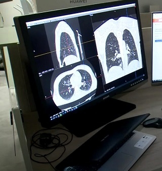
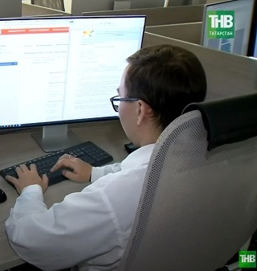

Радиологический
дата-центр
Профессиональное дистанционное описание медицинских диагностических изображений. Второе мнение от ведущих врачей-экспертов-рентгенологов. Быстрое получение результатов онлайн с гарантией качества и конфиденциальности.
Телерентгенология экспертного класса
-
1
Описание исследований выполняют сертифицированные врачи-рентгенологи с многолетним опытом работы в области лучевой диагностики
-
2
Дистанционная работа с цифровыми данными по результатам проведенных флюорографических, рентгенологических, маммографических, томографических исследований
-
3
Полное соответствие требованиям законодательства Российской Федерации в области охраны здоровья
Защита данных
Все каналы связи защищены по государственным стандартам безопасности.
Первый региональный центр
телерентгенологии
РДЦ — первый региональный медицинский центр телерентгенологии в Республике Татарстан, объединяющий команду опытных врачей-рентгенологов и профильных врачей-экспертов. Большой опыт сотрудничества с медицинскими организациями по расшифровке медицинских изображений обеспечивает доверие к нашей работе и уверенность в результате.
Наши контакты
Государственное автономное учреждение Республики Татарстан «Диспетчерский центр Министерства здравоохранения Республики Татарстан» (ДЦ МЗ РТ)
Адрес: 420073, г. Казань, ул. Аделя Кутуя, д. 88. Прием граждан по личным вопросам осуществляется по понедельникам, записаться на прием можно позвонив на номер 8 (843) 221-16-90
Обособленное структурное подразделение ДЦ МЗ РТ «Радиологический дата-центр»
Адрес: 420064, г. Казань, ул. Оренбургский тракт, д. 138 к.2


Наши услуги
Описание и интерпретация проведенных исследований по следующим видам диагностики
КТ
Детальное исследование костных структур и полых органов с помощью рентгеновского излучения.
ПодробнееРентген
Классическая и цифровая рентгенография для быстрой оценки состояния костей и легких.
ПодробнееМаммография
Профилактическое исследование молочных желез для раннего выявления новообразований.
ПодробнееФлюорография
Массовое скрининговое обследование органов грудной клетки с минимальной дозой облучения.
ПодробнееМультимодальные исследования
Комплексный анализ данных нескольких видов диагностики для постановки сложного диагноза.
ПодробнееКак происходит описание исследования
Простой и понятный процесс получения экспертного заключения
Выберите услугу
Перейдите в каталог и выберите нужное исследование
Заполните анкету
Укажите данные и загрузите материалы через облако
Оплатите услугу
Безопасная онлайн-оплата
Получите результат
Готовое заключение поступит на вашу почту в согласованные сроки
Оставить заявку на исследование
Заполните форму ниже и прикрепите снимки. Мы свяжемся с вами в ближайшее время.
Почему выбирают нас
Мы объединяем лучшие медицинские практики с передовыми IT-решениями
Конфиденциальность
Защита персональных данных в соответствии с требованиями законодательства
Доступность
Запрос второго мнения по ранее пройденному исследованию из любой точки мира.
Оперативность
Возможность получения результата в течение 3-х часов
Компетентность
Расшифровка диагностического исследования профильным специалистом.
Наши специалисты
Команда профессионалов с глубокой специализацией в различных модальностях лучевой диагностики.
Сотрудничество
Мы открыты для партнерства с медицинскими организациями
Медицинские организации
Предлагаем услуги телерентгенологии для клиник, диагностических центров и больниц
- Второе мнение
- Стандартизированный протокол
Врачи-рентгенологи
Приглашаем к сотрудничеству опытных врачей-рентгенологов для выполнения описания исследований
- Гибкий график
- Достойная оплата труда
Межрегиональное сотрудничество
Опыт сотрудничества с государственными и частными партнерами, персонализированный подход
- Совместная разработка проекта
- Персональный менеджер
- Консультативная помощь на техническом этапе
Готовы стать нашим партнером?
Оставьте заявку, и наш менеджер свяжется с вами для обсуждения условий сотрудничества